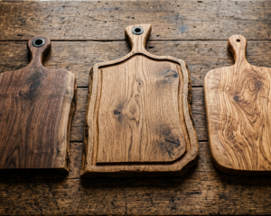
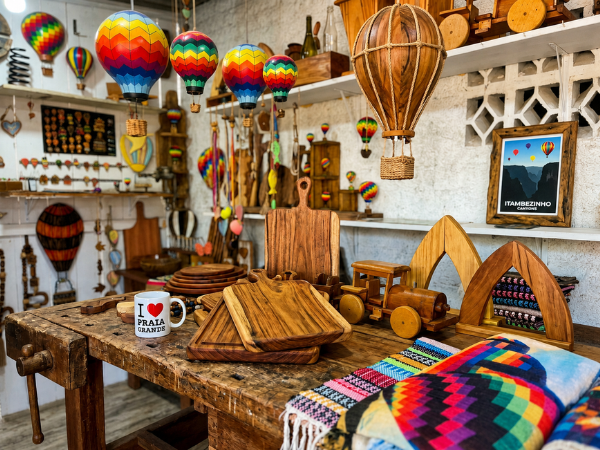
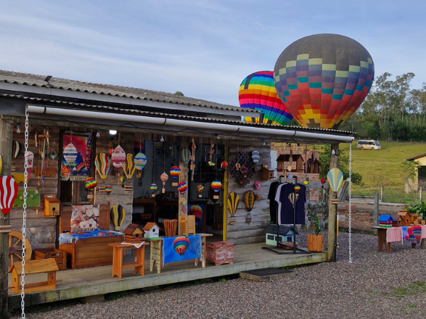
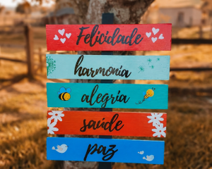
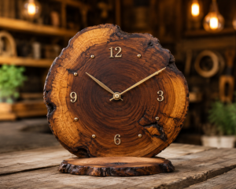
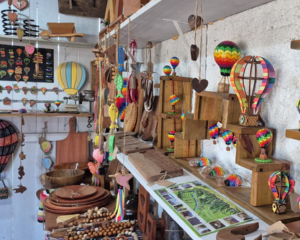
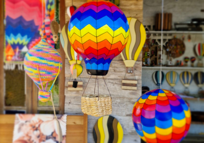
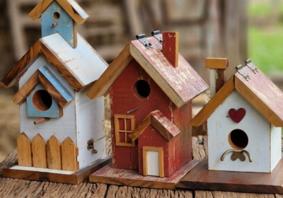
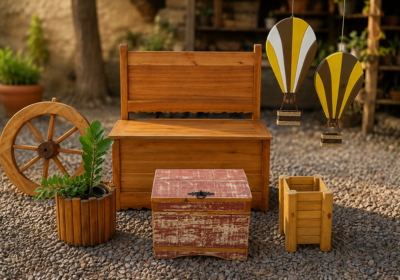

Tábuas de Churrasco
Modelos pesados, com sulcos profundos e acabamento impecável em óleo mineral natural.
Explore a maior variedade de souvenirs Praia Grande SC e artesanato em madeira nobre e de reuso. Peças únicas feitas à mão com o carinho e a solidez que a sua história de viagem merece.


Há aproximadamente 10 anos, a Madeira Velha Artesanato e Souvenirs nasceu com o firme propósito de transformar matérias-primas brutas em verdadeiras obras de arte que contam histórias. Localizada no município de São João do Sul - SC, nossa estrutura física está estrategicamente posicionada a poucos minutos de Praia Grande - SC. Essa região fantástica, amplamente consagrada no Brasil e no mundo por seus monumentais cânions esculpidos pelo tempo e pelos deslumbrantes voos de balonismo, serve como nossa maior fonte de inspiração diária.
Nossa dedicação consiste em moldar o aconchego do estilo de turismo de serra em cada fibra de madeira que passa pelas mãos experientes dos nossos artesãos locais. Ao entrar em nossa loja física, o turista é recebido pelo perfume característico da madeira tratada e pela visão acolhedora de um ambiente planejado para celebrar a cultura catarinense. Não somos apenas uma loja de artesanato; somos o ponto de parada onde sua viagem ganha uma representação física tangível e eterna.
Visitar os cânions e ver o céu colorido pelos balões exige uma lembrança duradoura à altura dessa grande aventura.
Cada detalhe esculpido em nossas peças reflete a magnitude das formações rochosas de Praia Grande e arredores. Oferecemos presentes exclusivos que você não encontrará em centros comerciais comuns ou lojas de presentes industriais em série.
Nosso trabalho com artesanato em madeira utiliza métodos tradicionais de marcenaria rústica. Isso assegura que utensílios funcionais, como nossas cobiçadas tábuas de churrasco, durem por gerações mantendo a beleza original.
Ao adquirir nossos souvenirs Santa Catarina, você fomenta o ecossistema econômico regional. Fortalecemos a comunidade de artesãos de São João do Sul e valorizamos a tradição familiar do trabalho manual sul-catarinense.
Uma seleção primorosa criada para decorar seu lar com bom gosto rústico e sofisticação.

Modelos pesados, com sulcos profundos e acabamento impecável em óleo mineral natural.

Placas decorativas e quadros com frases inspiradoras e paisagens marcantes da serra.

Discos de madeira rústica transformados em relógios elegantes para salas e áreas gourmet.

Ímãs tridimensionais, canecas gravadas e mimos perfeitos para presentear amigos.
A região onde estamos estabelecidos é abençoada por uma geografia única no Brasil. Praia Grande - SC converteu-se na capital nacional do balonismo, preenchendo os céus matinais com cores vivas contrastando com as escarpas de basalto do Parque Nacional de Aparados da Serra e do Parque Nacional da Serra Geral. Os turistas que vêm explorar as trilhas do Cânion Itaimbezinho ou contemplar as bordas vertiginosas do Cânion Fortaleza encontram aqui um refúgio de paz natural indescritível.
Após vivenciar a forte emoção de flutuar nas alturas em um balão de ar quente ou caminhar por trilhas cercadas por mata atlântica nativa, o trajeto natural de retorno passa exatamente por nossas portas em São João do Sul. Parar na Madeira Velha é o desfecho clássico para o seu dia de exploração, permitindo que a sensação de liberdade das montanhas seja eternizada através das nossas esculturas em madeira, casinhas de passarinho decorativas, porta-chaves utilitários, além de mesas e bancos robustos desenvolvidos sob medida.
Destaque para o acabamento fino e visual aconchegante da nossa loja física.



A satisfação de quem parou, tomou um café conosco e garantiu lembranças de viagem inesquecíveis.
"lugar incrível. os itens de artesanato são lindos. levei um móbile de balões pra decorar o escritório e tapetes para o quarto. o atendimento é incrível. vale a pena parar e conhecer. lugar ótimo para receber dicas de passeios pela região."
"Os proprietários são incríveis, as peças são lindas e vale a pena levar uma lembrança feita a mão por eles. Queríamos ter tomado um café e ficado horas conversando porém precisávamos partir. Recomendo que parem rapidinho pra bater um papo e levar uma lembrança"
"Ótimo lugar prá se visitar. Bom atendimento e boas opções de compras. Show parabéns prá os proprietários."
Tire todas as suas dúvidas sobre produtos, localização, encomendas e visitas guiadas.
Nossa loja está estabelecida no município de São João do Sul - SC, situada na rodovia (SC 290) principal de acesso que conecta à cidade vizinha de Praia Grande - SC. É um ponto de parada muito fácil e acessível para quem está indo ou voltando dos passeios nos cânions.
Atendemos de segunda a domingo, inclusive em feriados locais e nacionais, das 08:00 às 18:30. Como a região é focada em turismo de fim de semana, nossa equipe está sempre pronta para recebê-lo aos sábados e domingos.
Não realizamos vendas diretas via e-commerce em nosso site oficial. Porém pode entrar em contato pelo Whatsapp que realizamos a sua encomenda online
Sim! Podemos entalhar nomes, logomarcas ou frases especiais sob encomenda direto na madeira. Entre em contato conosco pelo WhatsApp para alinhar os detalhes da personalização antes de sua viagem.
Trabalhamos predominantemente com madeiras nobres de alta densidade e madeiras de reuso ou demolição tratadas de forma ecologicamente correta, garantindo alta resistência contra umidade e deformações.
Uma grande parte é desenhada e esculpida em nossa oficina. Outros souvenirs complementares, são criados em parceria com artesões locais.
Sim. Fabricamos mesas de jantar rústicas, tampos de madeira maciça e bancos compridos sob medida para varandas, áreas gourmet, chácaras ou pousadas da região serrana.
Recomendamos lavar apenas com água e sabão neutro, secar à sombra e aplicar uma fina camada de óleo mineral ou cera de abelha a cada dois meses para manter o brilho e a impermeabilização natural.
Com certeza. Dispomos de uma área de recuo ampla na lateral da rodovia, perfeitamente adequada para o estacionamento seguro de vans, micro-ônibus e ônibus de excursões de agências de turismo.
Aceitamos pagamentos via PIX, dinheiro em espécie e as principais bandeiras de cartões de crédito e débito, com opções fáceis de parcelamento para compras de maior valor.
Sim. Todas as nossas casinhas de passarinho recebem tripla camada de verniz marítimo ou stain de alta proteção, tornando-as perfeitamente aptas a decorar jardins externos expostos às intempéries.
Sim, essa é uma de nossas especialidades. Temos chaveiros, imãs e mais objetos decorativos que trazem a silhueta clássica dos cânions da nossa região.
Estamos localizados a menos de 10 minutos de carro do centro de Praia Grande, margeando a rota asfalta principal, facilitando o acesso sem desvios complicados em estradas de chão batido.
A melhor forma é seguir nosso perfil oficial no Instagram e salvar nosso contato no WhatsApp. Postamos semanalmente as novas fornadas de esculturas e tábuas exclusivas saídas da marcenaria.
Será um imenso prazer! Incentivamos todos os nossos queridos clientes e amigos turistas a registrarem seus momentos em nosso espaço rústico e marcarem nossa localização nas mídias digitais.
Consulte o mapa abaixo para traçar seu trajeto exato até nossa loja e garantir suas compras.
Fale conosco para tirar dúvidas pontuais ou encomendar produtos específicos para sua viagem.